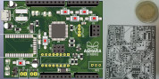
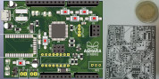

Diego Mena
DESARROLLADOR DE SOFTWARE Y HARDWARE
Apasionado por la ciencia y las tecnologías libres.
E-mail: ingelectronicadj@gmail.com
Contacto: (+0571) 321 3842659
Ingeniero electrónico con experiencia en el desarrollo de productos digitales, apasionado por la ciencia y la tecnología. Promotor de software libre y hardware de diseño abierto. Investigador sobre herramientas de uso educativo digital y especialista en la ejecución de proyectos orientados a Internet.
Experiencia
Gestor Tecnopedagógico
Contratado para desarrollar herramientas web y fragmentos de software para la automatización de procesos, así como auditar la calidad de ambientes virtuales de aprendizaje Moodle, correspondientes al área de gestión e innovación tecnopedagógica de cursos y recursos educativos digitales de la UNAD.
Diseñador Electrónico
Encargado de plantear solución a proyectos de tecnificación y automatización industrial orientados al Internet de la cosas. Diseñar, desarrollar e implementar software y hardware, con el propósito de monitorear o realizar alguna acción remota en específico desde cualquier parte con cobertura a internet o dentro de una zona de cobertura por radiofrecuencia.
Investigador Junior
Convocado por grupo de investigación para desarrollar prototipos de dispositivos IoT enfocados a la horticultura. Realizar análisis de investigación y documentar procesos a través de informes científicos. Asistir a eventos internacionales sobre agricultura de precisión.
Desarrollador Web
Encargado de desarrollar herramientas web para la Inclusión de personas con discapacidad auditiva en entornos de aprendizaje digital.
Educación
Ingeniero Electrónico
Actividades y asociaciones: Investigación y desarrollo (I+D). Exmiembro de los grupos de investigación: GLUD - Grupo Linux Universidad Distrital, GITUD - Grupo de Telecomunicaciones de la Universidad Distrital, LASER - Laboratorio de automatizacion, sistemas embebidos y robótica, TECLIBRE - Semillero de investigación en tecnologías libres.
Desarrollador FullStack
Especialista en soporte de tecnologías de la información
Especialista en Gestión de Proyectos
Actividades y asociaciones: Investigación y desarrollo (I+D). Miembro de la Red de Gestión Tecnopedagógica de cursos y recursos educativos digitales. Responsable por: Tecnologías de evaluación y proctoring.
Habilidades
Capacidad para la investigación, el autoaprendizaje, la resolución de problemas con creatividad e innovación, capacidad para escuchar a las personas y capacidad de recuperación. Facilidad de expresión oral, liderazgo de equipos, adaptabilidad a entornos laborales bajo presión, habilidades sociales y habilidades ejecutivas para administrar tareas por objetivos.
Seleccione los iconos para abrir certificaciones.
- Diseño web completamente adaptable
- Facilidad de trabajo con librerias en Javascript
- Auditor con experiencia en accesibilidad web
Proyectos
Entre los proyectos más destacados se encuentran:

 


Para ver todos los proyectos consulte mi cuenta Gitlab o mi cuenta Github.
Intereses
Entre mis intereses profesionales destaco el hecho de poder innovar siempre que sea posible, claramente, sin perder de vista el ciclo de vida de los productos o servicios que se encuentren en producción. Como entusiasta de la informática desde niño, he sido dado a la investigación y el autoaprendizaje, esta fortaleza me ha llevado con el paso del tiempo a formular mejores preguntas y dar con hallazgos interesantes en tecnologías para el internet de cosas, el analisis masivo de datos, la inteligencia artificial y la automatización de procesos.
Me interesa en gran medida aportar en temas de educación y a su vez disminuir la brecha digital. Considero que la educación es un pilar fundamental de la sociedad, y por ello, desde mis capacidades y experiencias aporto en la formación de formadores sobre nuevas herramientas de uso educativo digital.
Desde el análisis de los objetivos de desarrollo sostenible me interesa poder contribuir a la soberanía alimentaria(hambre cero), la educación de calidad, la energía asequible y no contaminante como acción por el clima, así como la conectividad a internet como derecho fundamental. Me interesa mucho aportar significativamente a esa gran red que llamamos internet y me capacito diariamente para ser consecuente con mis intereses.
Premios & Reconocimientos
- Ponente - Premio Interamericano en Modelos Educativos Innovadores en Eduación Superior MEIN - 2020
- 1 rd Place - AngelHack - IBM & Hurify - Project IceB: party IoT whit wearables and beacons Bluetooth - 2018
- Sage on servers and IPv6 networks - Hurricane Electrics Certification - 2018
- 1 rd Place - Hackathon Reinventa Realiza y Respira - University Javeriana - Diaspora: quality of the air with IoT LPWAN - 2018
- 1 st Place - IA Experience Antioquia - RIU: Immediate reaction in emergency rooms with IoT and artificial intelligence - 2017
- 1 rd Place - Regional Santander Digital - Gobernación de Santander - Videoreproductor of sign language Assersum - 2017
- 1 st Place - Hackathon Bunny Inc - Anand Seeds Hack Agro-IoT whit RF 433MHz - 2016
- 2 nd Place - Eco-Hackathon - Botanical Garden of Bogotá - Weather stations with GSM/GPRS - 2015
- 1 st Place - Hackathon for peace and free culture - Alta Consejería Distrital of TIC - Anand Seeds AgroEthernet - 2014